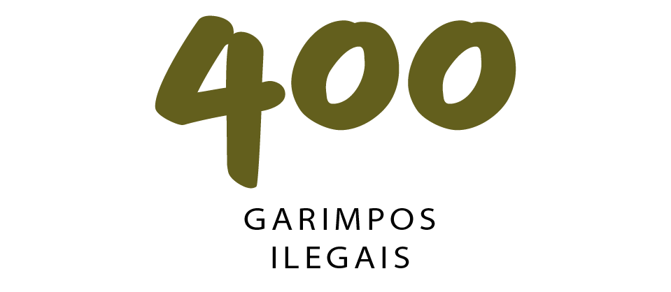
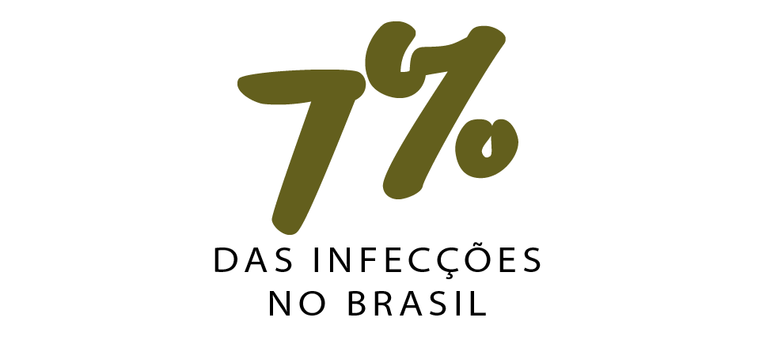
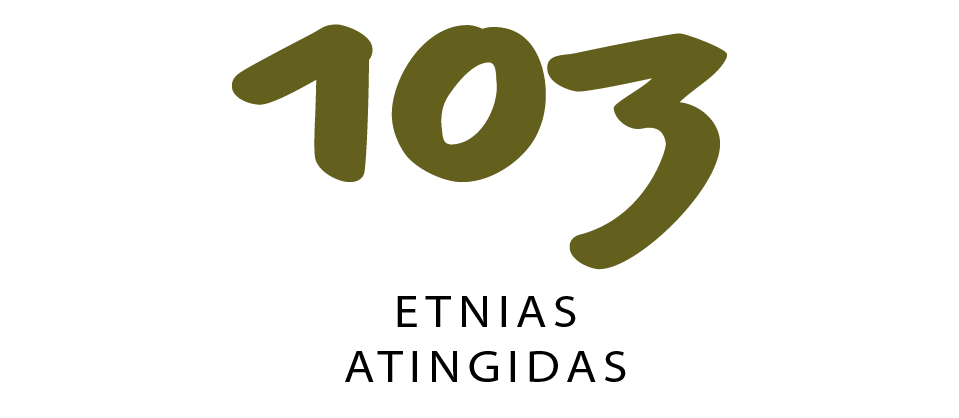
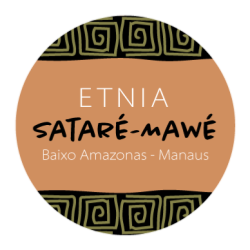
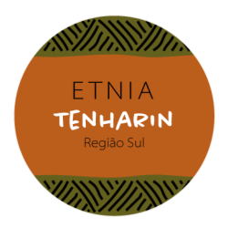

Doe agora e garanta que comunidades indígenas da Amazônia possam enfrentar a Covid-19 e a fome!

Há mais de 400 garimpos ilegais na Amazônia brasileira. Garimpeiros ilegais e outros invasores estão entre os principais vetores de contaminação em territórios indígenas protegidos.

O Amazonas registra quase 7% das 800 mil infecções confirmadas por Covid-19 do país.

á são ao todo 103 etnias atingidas, ⅓ do total de povos tradicionais existentes no Brasil.
img8
Originalmente viviam na região do Médio Solimões e rio Japurá, nas regiões dos municípios de Tefé e Coari. Também ocupam uma área da Colômbia. Infelizmente, no século XX, foram fortemente impactados com a exploração da borracha. Hoje existem cerca de 300 famílias ligadas a Associação das Comunidades Indígenas de Coari.
Ticuna são o mais numeroso povo indígena na Amazônia brasileira. As máscaras, desenhos e pinturas produzidas por esse grupo ficaram conhecidas mundo afora. Hoje enfrentam o desafio de garantir sua sustentabilidade e de manter viva sua riquíssima cultura.

Os arapaços são um grupo indígena que habita o noroeste do estado brasileiro do Amazonas, mais precisamente nas áreas indígenas do Rio Negro.
Inventores da cultura do guaraná, os Sateré-Mawé domesticaram a trepadeira silvestre, possibilitando que hoje o guaraná seja conhecido e consumido no mundo inteiro! São 4 mil residentes na região do Baixo Amazonas e tantos outros em Manaus.

Tenharin é o nome pelo qual são conhecidos três grupos indígenas que vivem hoje na região do curso médio do rio Madeira. Os povos Kagwahiva são falantes de uma mesma língua, pertencente à família Tupi-Guarani.